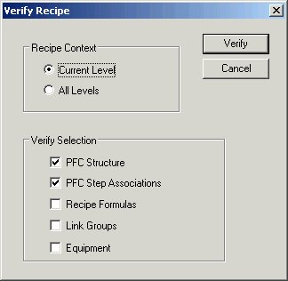

JavaScript must be enabled in order to use this site.Please enable JavaScript in your browser and refresh the page. Verify and save the recipe To finish the recipe, you should verify and then save it. On the View tab, in the Recipe group, click Verify Recipe. The Verify Recipe dialog appears. Keep the default settings and click Verify. If any errors are found, correct them. Save the recipe.